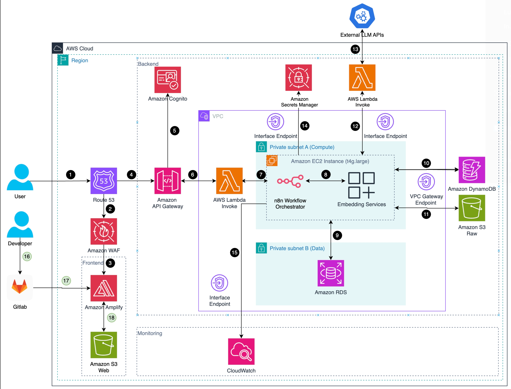

Hệ thống Phân tích, Phát hiện Rủi ro & Gợi ý Hợp đồng Tự động
Tài liệu này trình bày giải pháp SaaS ứng dụng mô hình AI nhằm hỗ trợ doanh nghiệp nhỏ và vừa (SME) và người dùng cá nhân trong việc đọc, phân tích và tự động tạo hợp đồng.
Hệ thống sử dụng OCR để trích xuất các điều khoản từ hình ảnh hoặc tài liệu người dùng tải lên, sau đó mô hình AI sẽ phát hiện rủi ro tiềm ẩn và đề xuất các chỉnh sửa có lợi hơn cho người dùng.
Giải pháp được triển khai trên nền tảng AWS, sử dụng EC2, n8n, DynamoDB và Amplify, đảm bảo tính bảo mật, mô-đun và khả năng mở rộng toàn diện.
Một nền tảng SaaS hỗ trợ bởi AI có khả năng:
| Hạng mục | Mô tả |
|---|---|
| Hiệu suất | Giảm thời gian rà soát hợp đồng từ hàng giờ xuống vài phút |
| Tiết kiệm chi phí | Cắt giảm 60–70% chi phí tư vấn pháp lý |
| Khả năng mở rộng | Mô hình SaaS hỗ trợ multi-tenant |
| Tuân thủ | Đảm bảo đánh giá rủi ro và theo dõi trích dẫn pháp lý nhất quán |

Hệ thống được điều phối bởi AWS EC2, tự động hóa bằng workflow n8n.
Toàn bộ xử lý AI và OCR được thực hiện qua API ngoài (OpenAI + DeepSeekOCR).
| STT | AWS Service | Function |
|---|---|---|
| 1 | Amazon Route 53 | Tiếp nhận yêu cầu (request) từ Người dùng (User) và điều hướng truy cập. Nó trỏ đến cả Frontend (Amplify) và Backend (API Gateway). |
| 2 | Amazon WAF | (Luồng Frontend) Dịch vụ tường lửa ứng dụng web, lọc các yêu cầu độc hại trước khi đến frontend. |
| 3 | Amazon Amplify | (Luồng Frontend) Dịch vụ hosting, build và triển khai ứng dụng web (frontend) cho người dùng. |
| 4 | Amazo API Gateway | (Luồng Backend) Tiếp nhận các yêu cầu API từ người dùng, đóng vai trò là “cổng” cho mọi logic nghiệp vụ phía sau. |
| 5 | Amazon Cognito | Được API Gateway gọi để xác thực và cấp quyền cho người dùng, đảm bảo chỉ người dùng hợp lệ mới được truy cập API. |
| 6 | AWS Lambda (Invoke) | Được API Gateway kích hoạt. Hàm Lambda này thực thi một tác vụ nhanh, trong trường hợp này là để gọi và kích hoạt luồng quy trình (workflow) chính. |
| 7/8 | EC2 | Trên EC2 sẽ chạy n8n, một dịch vụ điều phối nhận lệnh từ Lambda (6) để bắt đầu và quản lý luồng quy trình xử lý dữ liệu và embedding service, dịch vụ con được n8n gọi, chuyên thực hiện tác vụ tạo vector embeddings (vector hóa dữ liệu). |
| 9 | Amazon RDS | Dịch vụ cơ sở dữ liệu quan hệ (như PostgreSQL, MySQL). Dịch vụ Embedding (8) kết nối đến để lưu hoặc truy vấn dữ liệu có cấu trúc. |
| 10 | Amazon DynamoDB | Dịch vụ cơ sở dữ liệu NoSQL. Dịch vụ Embedding (8) sử dụng để lưu trữ hoặc truy vấn dữ liệu (ví dụ: metadata) với tốc độ cao. |
| 11 | Amazon S3 Raw | Dịch vụ lưu trữ đối tượng. Dịch vụ Embedding (8) dùng để đọc hoặc lưu trữ các file dữ liệu thô (raw data). |
| 12 | AWS Lambda (Invoke) | Dịch vụ Embedding (8) gọi một hàm Lambda khác để thực thi một logic cụ thể (trong sơ đồ này là để gọi ra bên ngoài). |
| 13 | External LLM APIs | Hàm Lambda (12) gọi đến một API của bên thứ ba (ví dụ: OpenAI, Claude) để xử lý ngôn ngữ. |
| 14 | Amazon Secrets Manager | Máy chủ EC2 (7, 8) truy cập dịch vụ này để lấy các thông tin nhạy cảm (như API keys, mật khẩu database) một cách an toàn. |
| 15 | Amazon CloudWatch | Dịch vụ giám sát và ghi log. Hàm Lambda (6) (và có thể cả các dịch vụ khác) gửi log và metrics đến đây để theo dõi hoạt động. |
| 16 | Gitlab | Hệ thống CI/CD (Continuous Integration/Continuous Deployment) của Gitlab tự động kích hoạt khi có thay đổi code, build và deploy ứng dụng lên Amplify. |
| 17 | Amazon S3 Web | Amazon Amplify sử dụng một S3 bucket này để lưu trữ các file tĩnh (HTML, JS, CSS) của ứng dụng web sau khi build xong. |
MVP (Local):
Cloud Integration:
| Category | Specification |
|---|---|
| Programming Stack | n8n workflows, Net.js 15 + TailwindCSS (Amplify) |
| External APIs | DeepSeek OCR, GPT-5 |
| Storage | RDS PostgreSQL, DynamoDB, S3 |
| Orchestration | EC2 instance (t4g.large) |
| Security | WAF, Secrets Manager, Cognito |
| Monitoring | CloudWatch + n8n Alert Hooks |
| Phase | Deliverable | Duration |
|---|---|---|
| 1 | MVP backend (n8n + DynamoDB + OCR pipeline) | 3 tuần |
| 2 | Phân tích rủi ro hợp đồng (tích hợp GPT) | 3 tuần |
| 3 | Trình tạo phiên bản và mẫu hợp đồng | 2 tuần |
| 4 | Triển khai AWS đầy đủ (Amplify + Cognito + EC2) | 3 tuần |
| 5 | Giám sát, mở rộng và thử nghiệm pilot | 2 tuần |
| Component | AWS Service | Monthly Cost (USD) | Ghi chú |
|---|---|---|---|
| Frontend Hosting | Amplify | 3.68 | |
| DNS/Routing | Route 53 | 2.04 | |
| Backend Compute | EC2 | 25.79 | |
| User Database | RDS for PostgreSQL | 8.73 | |
| Vector Database | DynamoDB | 8.30 | |
| Storage | S3 | 1.93 | |
| Request Routing | API Gateway | 1.29 | |
| Virtual Cloud | VPC | 28.52 | |
| AI API Usage | OpenAI | 5.00 | Non-AWS |
| User Authentication | Cognito | 1.00 | |
| Security | Secrets Manager | 0.94 | |
| Security | WAF | 6.60 | |
| Monitoring | CloudWatch | 0.53 | |
| Tổng cộng | 94.35 | ~306/13 tuần |
Phần lớn thành phần sử dụng dịch vụ serverless và managed của AWS, giảm thiểu tài nguyên nhàn rỗi và chi phí vận hành.
Compute: EC2 dùng Graviton t4g.large chạy giới hạn 12h/ngày.
Database: RDS t4g.micro và DynamoDB (50 GB) được cấu hình vừa đủ cho tải dev/test, tránh dư thừa tài nguyên.
Storage: Hai bucket S3 tách biệt cho dữ liệu gốc và web giúp tổ chức dữ liệu hợp lý và kiểm soát chi phí.
Tích hợp & bảo mật: Dùng HTTP API Gateway, một WAF rule, và một Route 53 zone để giảm chi phí định kỳ.
Tổng chi phí khoảng 65 USD/tháng, thể hiện một hệ thống đã được tối ưu tốt.
| Rủi ro | Mức độ | Giải pháp |
|---|---|---|
| Chi phí API cao khi dùng LLM | Trung bình | Dùng cache và truy xuất ngữ cảnh từng phần |
| Lo ngại về quyền riêng tư dữ liệu | Thấp | Mã hóa dữ liệu S3 và Aurora bằng KMS |
| Lỗi workflow hoặc timeout | Trung bình | Áp dụng retry logic trong n8n + cảnh báo CloudWatch |
| Thay đổi từ API vendor (OpenAI/DeepSeek) | Thấp | Xây lớp trừu tượng API để dễ thay thế |
| Hiệu năng khi tải cao | Cao | Bật autoscaling EC2 và RDS read replicas |